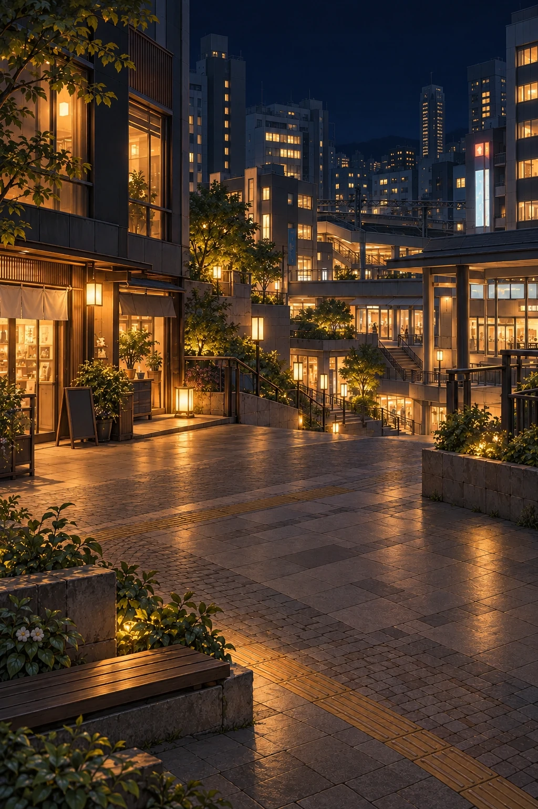
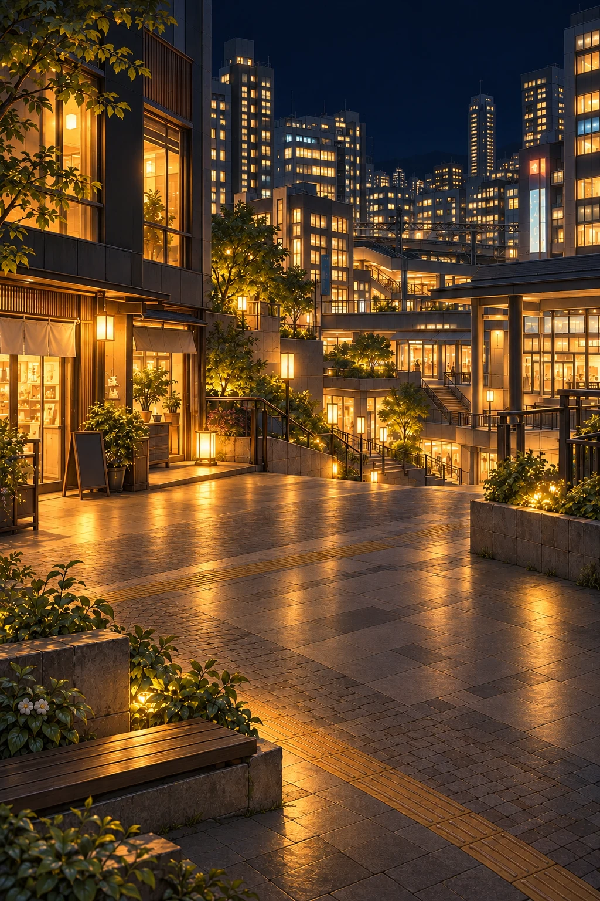

VERSION 3 · 都会の夜1枠のみ更新
スマートフォンでは横にスワイプして4枚を比較できます。画像を選ぶと下で大きく表示します。
時間帯の決定
朝 05:00–09:59
昼 10:00–15:59
夕 16:00–18:59
夜 19:00–04:59
本編の現在の昼開始は11:00。このページだけで10:00切替を比較し、本編の時計・育成・保存処理は変更していません。
V3では都会の夜のみ修正し、その他11枠はV2を維持しています。構図の大枠は維持していますが、細かな植生・木目・窓の描写には生成に伴う差があります。実機の接地・遮蔽は統合前の確認事項です。
天気・季節と今後の制作
晴れ・曇り・雨・雪は既存判定を再利用。室内へ雨雪を降らせず、深海・星空の地上天気なしを維持します。季節は現実の月または手動設定を継承します。時間帯画像の上に夜の暗幕を二重適用しない設計が必要です。
まずこの3地域を確認し、その後に水辺・田舎・山・雪国・海・ジャングル・砂漠・深海・星空・記憶の40枚分へ進みます。季節×天気の全組合せ画像は制作しません。
森F3には滝・水がありません。歩行領域はF3専用定義を使っています。ジャングルはJ5の土の反射を抑えた採用版を原本一覧に記録し、J4やさらに穏やかな後続版と区別しています。
都会の夜 V2 / V3


左：V2 ／ 右：V3。上の4時間帯で夕と夜も比較できます。